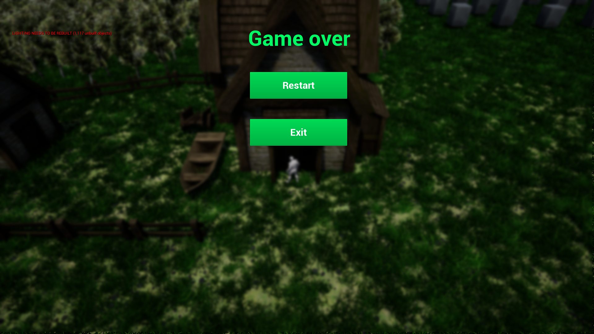
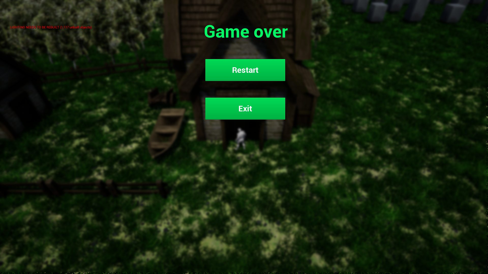

Um leikinn
Leikurinn er 3d top-down post-modern tactical military shooter, eða það er það sem hann átti að vera. Farið er frekar útí hvernig það fór og afhverju það fór þann veg sem hann fór á wiki á github.
Spilun
Playernum er stjórnað með því að smella á staði sem hann á að fara á með músinni. Ef það er gert yfir öðrum character byrjar hann að skjóta á hann. Markmiðið í leiknum er að ná að drepa þrjá af fjórum character-unum. Það er hægt að setja á pásu með 'P' takkanum á lyklaborðinu.
Annað
Options takkinn í pásu menu-inu er ekki tilbúinn og gerir ekki neitt, það er það sama með restart í Game over. Leikurinn er bara til fyrir windows því það tekur 3 klukkutíma að builda hann, og notar upp í 30gb ram og 100% cpu með 4790k, svo það er ekki hægt að gera mikið annað á meðan.